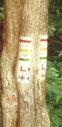

|
Nem kérhetõ szín
 Színtulajdonságok:
Ráilleszkedõ színek és metaszínek
Színtulajdonságok:
Ráilleszkedõ színek és metaszínek
(kártyailleszkedéshez ld. a JelzésSúgót is!):
A fekete kártyák színes lapoknak számítanak, de ilyen színt nem
lehet kérni. A fekete nem tartozik ugyanis az alapszínek közé, "nemlétezõ" színnek is
nevezhetõ.
A klasszikus pakli(k)ban egyetlen ilyen színû lap van, a fekete
 . Lerakni igen nehéz, hiszen színben nem
illeszkedik semmihez, csak jelzésben egy másik -hoz. Egy ászt viszont általában úgy
raknak le, hogy rádobálják az összes vele egyezõ színû lapot, s így igen ritka eset, hogy felül
marad, s egy másik -t (esetünkben a feketét) rá lehet tenni. Ezért szokás ezt a lapot a
más kártyajátékból ismert “Fekete Péter”-hez hasonlítani. . Lerakni igen nehéz, hiszen színben nem
illeszkedik semmihez, csak jelzésben egy másik -hoz. Egy ászt viszont általában úgy
raknak le, hogy rádobálják az összes vele egyezõ színû lapot, s így igen ritka eset, hogy felül
marad, s egy másik -t (esetünkben a feketét) rá lehet tenni. Ezért szokás ezt a lapot a
más kártyajátékból ismert “Fekete Péter”-hez hasonlítani.
Más módon viszont könnyebben is meg lehet tõle szabadulni, pl. egy másik játékoshoz
juttatni  , , , ,  , ,  , ,  , ,  , ,  vagy vagy  jelzésû lappal; vagy eldobni a jelzésû lappal; vagy eldobni a  -, -,  -, -,  -, -, -, -,  -lapok valamelyikével. -lapok valamelyikével.
Ha fekete a jelzéslap, a színes  -ek természetesen ászokat jelentenek, a színük nem válik feketévé. -ek természetesen ászokat jelentenek, a színük nem válik feketévé.
|

|

 Bevezetõ |
Bevezetõ |
 Szabályok |
Szabályok |
 Súgó |
Súgó |
 Paklik
Paklik